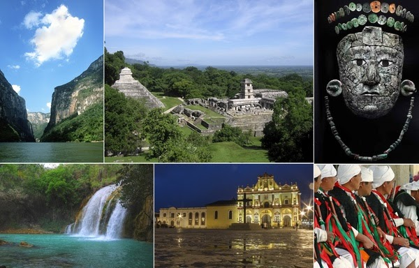
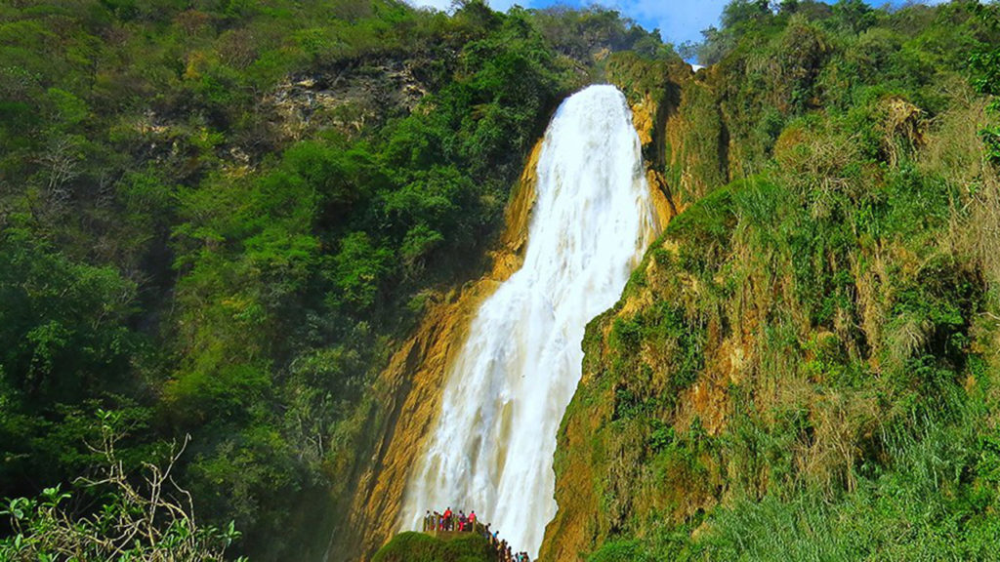

- Lugares Turisticos en Chiapas -

El turismo en Chiapas es uno de los sectores más importantes del estado, gracias a su impresionante riqueza natural, histórica y cultural. Cada año, miles de visitantes llegan para conocer lugares emblemáticos como el Cañón del Sumidero, una maravilla natural con enormes paredes rocosas y recorridos en lancha por el río Grijalva, o la zona arqueológica de Palenque, una antigua ciudad maya rodeada de selva.
También destacan las cascadas de Agua Azul y Misol-Ha, los Lagos de Montebello, el cañón La Venta y la Selva Lacandona, ideal para el ecoturismo. En el ámbito cultural, ciudades como San Cristóbal de las Casas y Chiapa de Corzo ofrecen una experiencia única por su arquitectura colonial, tradiciones vivas, mercados artesanales y festividades llenas de color. Chiapas es un destino que combina aventura, naturaleza y cultura, atrayendo tanto a turistas nacionales como internacionales que buscan experiencias auténticas y cercanas a las raíces de México.
